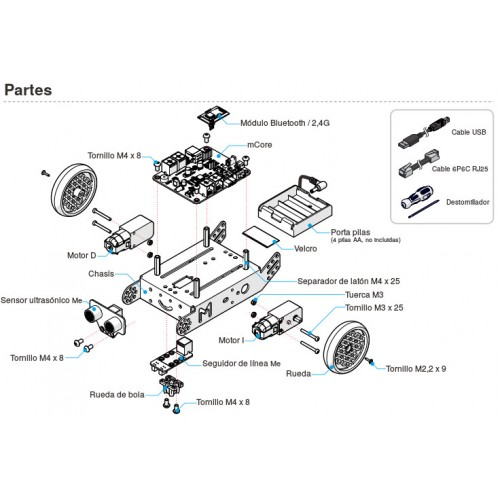
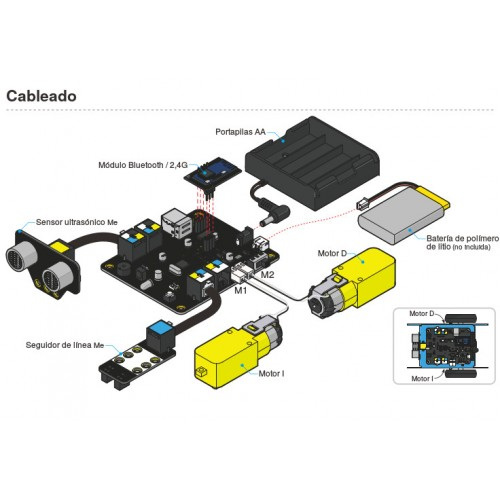

3.Arduino
Zer da Arduino?
Arduino hardware librea den plataforma bat da. Bere baitan hainbat plaka desberdin existitzen dira. Arduino plaka elektroniko bat da. Bertan txipak, konektoreak eta hainbat gailu aurki daitzeke. Oso konlexua da eta erraz apur daiteke kableak txarto kanektazen bazaizkio.
Hardware librea? Zer da hori?
Irakurri hurrengo artikulua eta jakingo duzu:
Orduan mbotak duen plaka hori?
mBotak MakeBlock enpresak eginiko plaka bat darama. Hau Arduinon oinarrituta dago baina empresa honek erraz oraindik ere errazago konektatzeko eta erabiltzeko moldatu du.
Bideo honetan ikus dezakezue mbot-ak ematen dizkigun aukerak:
Aukeratu Zuzena
Solución
Solución
Solución
Aztertu mCore plaka basea jolastuz
Eraiki
Gure robotak daukana ikasi duzu.
Orain eraiki dezagun. Kutxa barruan manuala daukazue. Hurrengo irudian nola montau behar duzuen adierazten da:

Konexioak hauek izango dira:

Hala ere ondorengo estekan hainbat video dituzue pausuz pausu montatzeko:
Obra publicada con Licencia Creative Commons Reconocimiento Compartir igual 4.0